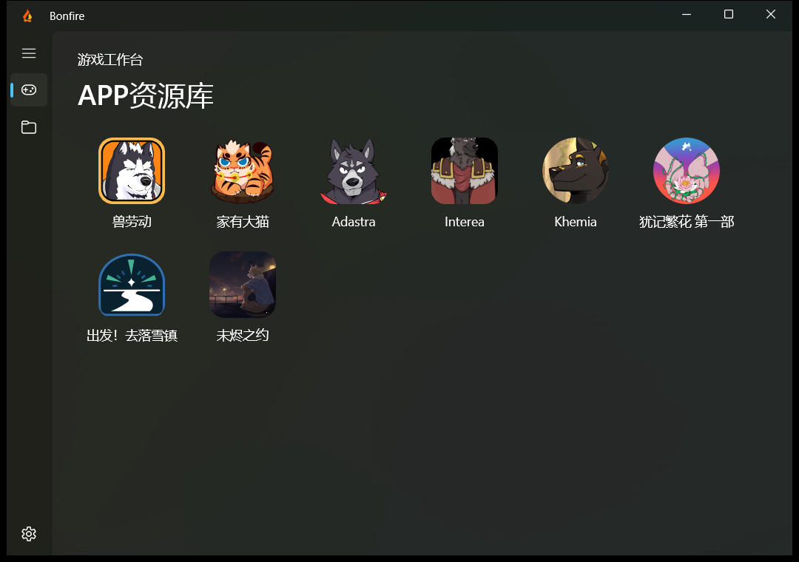

换台电脑接着玩
在家用 Windows 玩，到另一台 Mac 上继续。Bonfire 会寻找游戏的存档位置，再把进度还原到你选定的安装中。

在家用 Windows 玩，到另一台 Mac 上继续。Bonfire 会寻找游戏的存档位置，再把进度还原到你选定的安装中。
在分支前留一份备份。下次想看看另一条路，在存档管理器里按时间找回那一刻。
把存档包作为文件发过去。对方装好相应版本的游戏，就能在 Bonfire 里查看并接收你的进度。
从 Windows 到 Mac

先退出游戏，在工作台选择游戏，打开「提取」，把进度保存为一个文件。
选择游戏，查看适配信息和存档格式。
可以用 U 盘、隔空投送或你常用的文件传输工具。先在来源电脑提取，再在目标电脑选择同一款游戏接收。
接收页会先展示存档包的信息。点击「替换存档」后，Bonfire 才会写入目标游戏。想留住两边的进度，可以先在目标电脑上提取一份备份。
请准备与存档相容的游戏版本，以及这段进度用到的扩展或补丁。存档包只携带进度，游戏、汉化和额外剧情需要在目标电脑上安装。
在「存档管理器」中选择游戏，就能按时间查看已保存的存档包。你也可以手动选择其他备份文件夹。